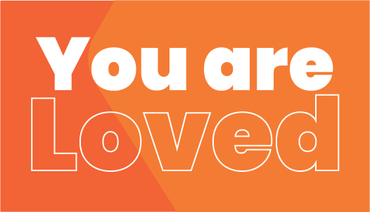
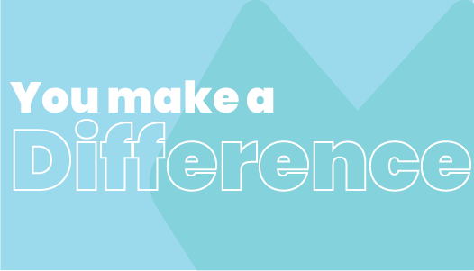
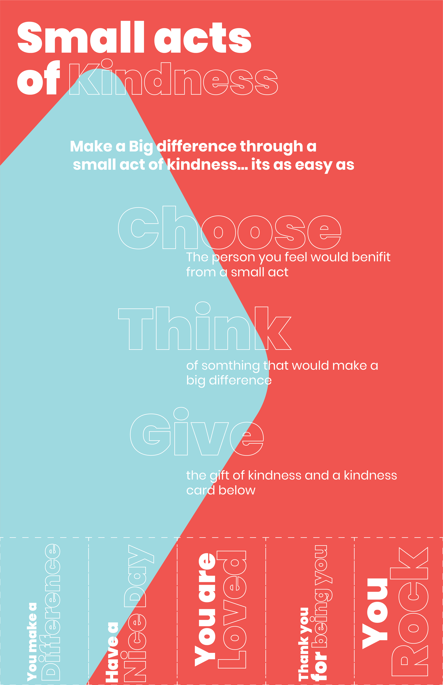
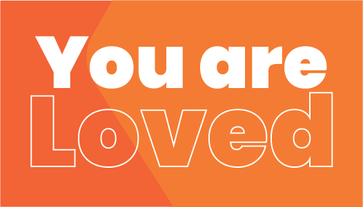
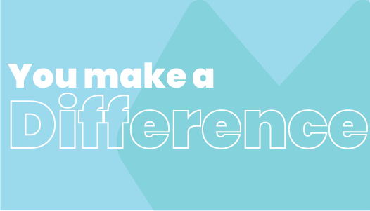
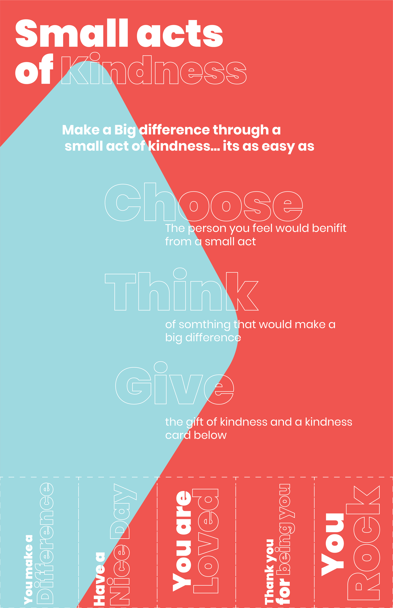
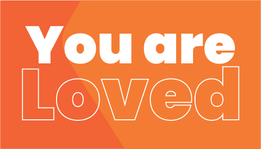
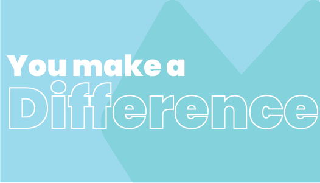
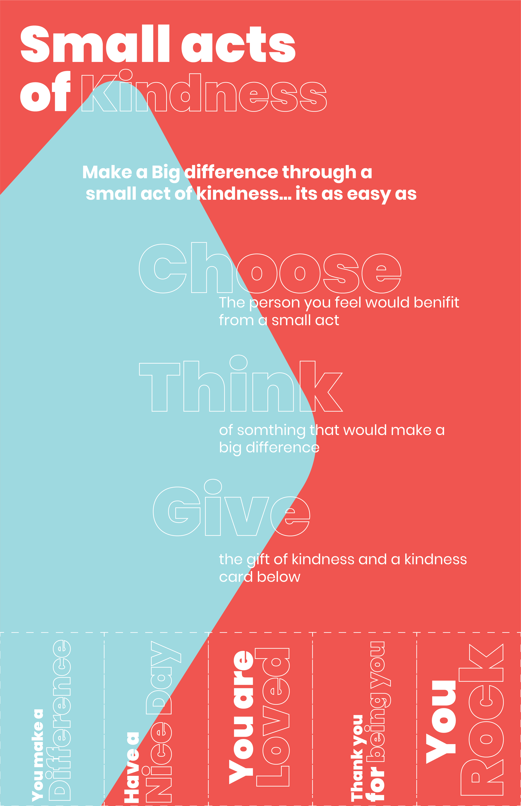
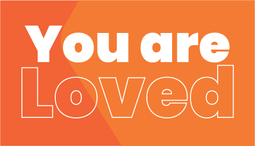
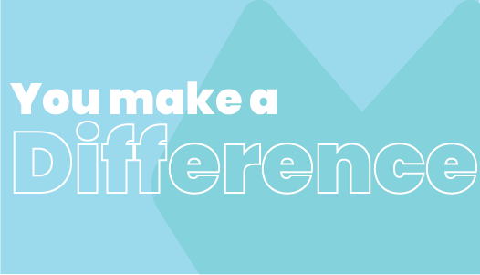
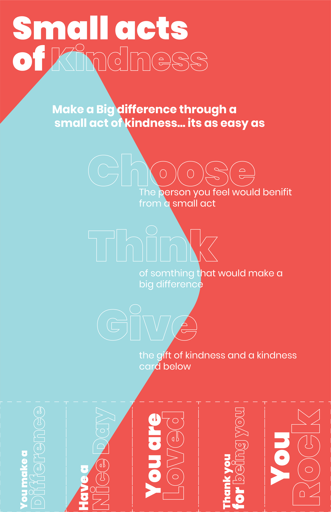
This project was part of my Projects in Graphic design II Class, in the class we were given live clients that we had to design for and one of them was Small Acts of Kindness. Small Acts of Kindness is a grassroots movement that is focused on spreading acts of kindness. The do this by giving out cards and putting up tear away posters that feature kind words that can be given to people to make them feel better.